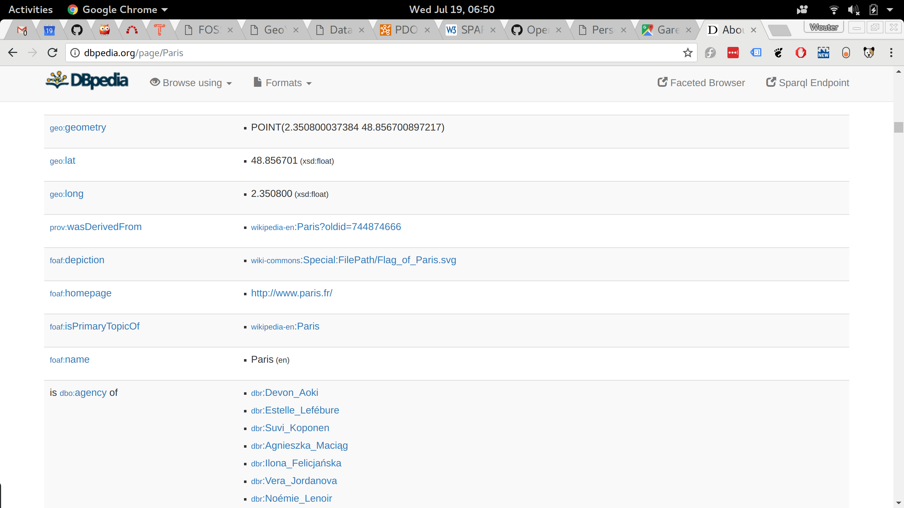
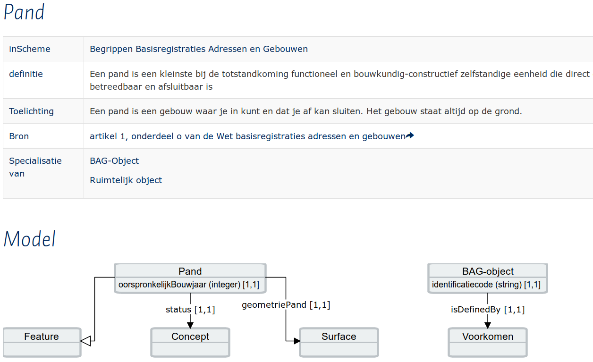
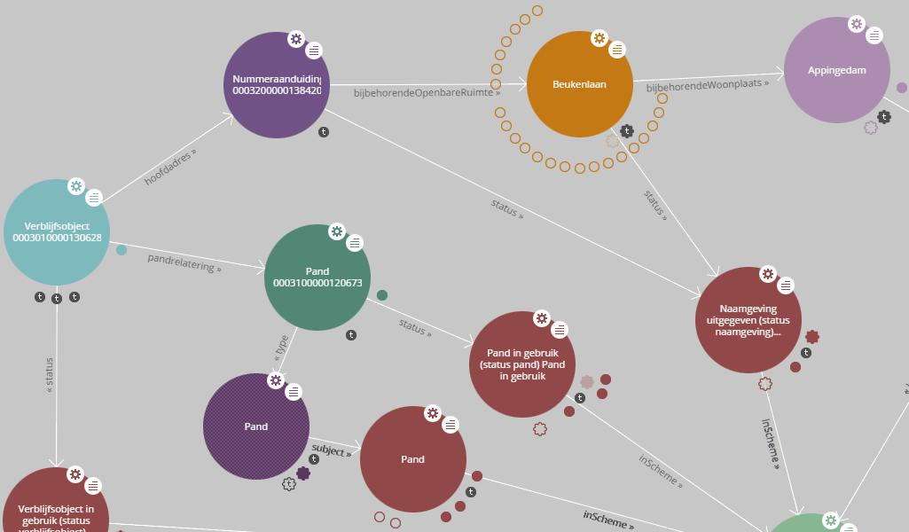

Finding & Querying Big Linked Geodata
Wouter Beek wouter@triply.cc, John Walker john.walker@semaku.com

Kadaster Data Platform: https://data.pdok.nl
Big Linked Geodata
Linked Open Data

Use (Geo)SPARQL endpoints i.o. copying data locally.
Big Linked Geodata @ Kadaster
- Over 5,000,000,000 graph edges
- Over 500,000,000 geo shapes
- High precision
- Performance
| Precision | Meaning |
|---|---|
| +/- | east/west or north/south |
| 1.0e2 | must be longitude |
| 1.0e1 | 1111 kilometer, continent |
| 1.0e0 | 111 kilometer, country |
| 1.0e-1 | 11 kilometer, city |
| 1.0e-2 | 1.1 kilometer, village |
| 1.0e-3 | 111 meter, large field |
| 1.0e-4 | 11 meter, parcel of land |
| 1.0e-5 | 1.1 meter, tree |
| 1.0e-6 | 11 centimeter, engineering |
| 1.0e-7 | 11 milimeter |
| 1.0e-8 | 1.1 milimeter, tectonic plate motion |
| 1.0e-9 | 110 micron, microscopy |
Geo + Linked Data is still very new
{kind=link}
GeoSPARQL standard
- Core
-
Topology Vocabulary: relations between geometries
- Simple Features
- Egenhofer
- RCC8
-
Geometry
- GML
- WKT
- Geometry Topology: properties of geometries & geometry functions
- RDFS Entailment: shape hierarchy
- Query Rewrite: rules for shapes (RIF)
GeoSPARQL implementations

GeoSPARQL implementations
- Not that many implementations to choose from.
- FOSS implementations do not perform.
- Challenging to deliver Open endpoints.
Querying Big Linked Geodata
(Programmers & Data Analists)
Support for Programmers & Data Analists
DBpediaThings a programmer needs

Autocompletion

Linked Open Vocabularies
Result set formats
Finding Big Linked Geodata
Browsing paradigms
Hierarchical browsing

Tabular browsing: concepts
Tabular browsing: instances

Graph navigation
LodLive
Faceted browsing

Map navigation

| Purpose | Technique |
|---|---|
| Concept browsing | Hierarchical browsing |
| Display one concept/instance | Tabular browsing |
| Explorative browsing; instance in context | Graph navigation |
| Instance browsing | Faceted browsing |
| Domain-specific overview | Map navigation |
Getting started with a new schema
Use case: BAG
Thank you!
Kadaster Data Platform: data.pdok.nl
John Walker john.walker@semaku.com
Wouter Beek wouter@triply.cc